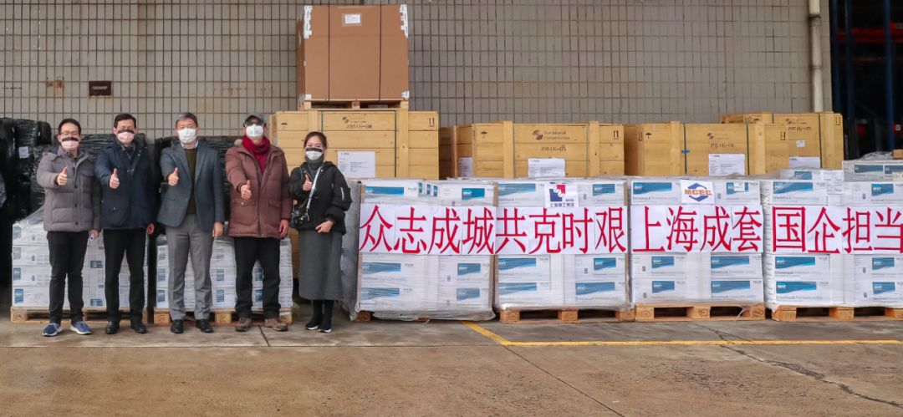
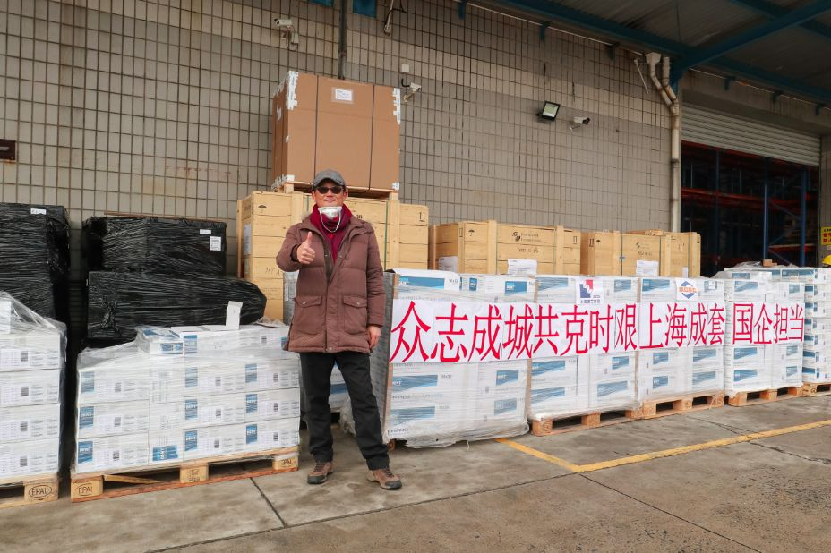

口述实录 | 香港女孩岑雅茵：大家都要平平安安，阿中哥哥加油！
原文链接 备份链接 总体而言，港人对待疫情，后来就没有内地那么紧张了。我妈妈讲，她觉得作为一个香港居民，自己最大的感受是彷徨。她抱怨道，在香港，没工开等于没饭吃了；公司起先通知放假到24号，何时复工再议，而现在仍然是等通知的状态。 …
医护人员冲锋在一线有需要，我们国企和其他企业就要一起做好后勤保障工作，挑起企业抗击疫情的责任担当，相信众志成城、共克时艰不是一句空话，大家一起努力，疫情终将过去，一切都会好起来。
口述 | 周 道
整理 | 周 洁
小年夜晚上大概10点左右，我收到微信消息，公司的领导班子需要讨论一件重要事情，马上。尽管时间不早了，但我和班子成员们还是第一时间连上线。
原来，随着1月20日晚上钟南山院士对于疫情的研判发出后，市面上许多医疗物资已经处于紧缺状态，上海本地的医疗物资库存也开始短缺了。于是，上海市商委在1月23日当晚召集企业开会，要求在座的国有企业想方设法通过各自的海外采购渠道，紧急采购一批医疗物资，他们还准备了一份清单，里面有口罩、防护服、护目镜，还有一些医疗器械设备等。
我们是上海建工外经集团旗下上海市机械设备成套（集团）有限公司所属的一家进出口公司，我是该公司的党支部书记兼副总经理，说实话我们对于这些医疗耗材并不熟悉，尽管进口过一些医疗设备，我们主要业务还是进口工业原材料和市政工程的大型机电成套设备。
疫情就是命令，当我们的医护人员开始最美逆行抗击疫情时，我们作为国企要有担当要有作为，我们班子统一思想明确任务后，成立了疫情物资筹备工作组。我们班子当时的想法是医疗物资不是普通商品在海外也是属于医疗监管的专业领域，要在短短几天找到卖家能供应一定的数量价格也适中，那就一定要找到一些在海外社会关系广泛的合作伙伴帮忙。
为此我们抽调了公司大半的人员，分成了三个项目协调小组，工作组指导小组成员在欧洲市场、东南亚市场、美洲市场联系我们当地的合作伙伴，看看他们是否能够提供一些采购线索。

第二批口罩运抵上海后，公司小伙伴的合影
找遍世界终于发现货源
刚开始做这个工作千头万绪，我们遇到了不少困难。
首先，我们毕竟不是做医疗耗材的进出口公司，我们对于它们的产品标准并不清楚。例如，有渠道反馈回来一家国外公司的防护服，产品手册上的这些防护服用途各异等级不同，员工也不清楚哪些是我们需要的哪些并不合适。为此，我们工作组引导业务员做了常用医疗物资如口罩、防护服和护目镜等的标准梳理。以口罩为例，区分医用级和非医用级，每个级别里有多少不同标识、型号和用途，同时各国的标准有哪些，哪些标准是符合国内医用物资标准，让合作伙伴有这份标准找起物资来就有的放矢了。
其次，医疗物资的品质和价格要找到一个平衡点。
最初几日有些渠道反馈回来的信息是这些海外物资的价格都在哄抬上扬，而且从发回的物资照片看质量也参差不齐。我们工作组马上和业务员强调了，疫情期间的物资价格可以比平时高一点但不能离谱，同时一定要保证质量，不能采购进来的医疗物资出现伪劣不合格产品。
再次，就是海外医疗物资也开始进入短缺状态。我们的合作伙伴收到我们采购信息后，纷纷联系当地的生产企业、药房和大型超市。然而结果并不理想，要么数量少要么不符合标准或者价格虚高。各小组的海外采购陷入了僵局。
可就在1月28日那天晚上，一个好消息传来了，一位名叫杨聿扬的业务部门经理说他那里找到货源了，第一批19万，第二批还在落实中，数量也不会少。我们整个团队为之欣喜。
原来我们这位老杨，翻遍了他的名片和微信朋友圈，找到了一位德籍华人王先生，王先生过去和我们公司在工业设备上有过多年合作，过往的合作经历让老杨十分信任其为人和丰富的社会关系。
这位远在德国埃森的王先生说，他的多位亲戚朋友，正处于疫情爆发的核心地带——武汉，因此他的内心十分不安。此时杨聿扬的跨国电话无疑让二人一拍即合。可当王先生挂完电话联系多家药房和超市后，发现市场上能零售买到的医疗物资已几无存货了，原来当地不少中国留学生和华侨已经在马不停蹄地往国内运送口罩等医疗物资了。王先生跟老杨说他认识一位德国医生朋友，这位德国医生应该有不少医疗圈的人脉关系和资源，等回音。果然第二天传来了好消息：这个德国医生牵线搭桥找到了一批在德国法兰克福的法国产医用外科口罩而且价格合理。
当时比对国内标准后为了再确认该口罩是否适合医用，我还专门请教了瑞金医院的重症室专家，当DOUBLE CHECK后，我们才定下心让老杨迅速锁定货源立即空运回国。

我们的功臣老杨
口罩回国历经波折
没想到困难接踵而来。1月29日办妥与外商的交易手续后，也就在这一天，前方传来的消息却是德国汉莎航空停飞所有飞往中国的航班。这一变数使得法兰克福到上海的空运舱位骤减，原先预定2月2日的航班排不上队只能顺延到2月15日，联系其他航空公司得到的反馈也是停飞或少量舱位时间延后的消息。几经周折，我们得知2月5日有一架航班，货物以“航空快递”的方式出运离港。
虽然“航空快递”运费比“普通航空运输”贵数倍，但我们班子商讨疫情当下国内急用物资时间拖不得，增加的运费成本就自己承担下来，要尽一切可能将这19万只口罩运回国内，就安排“航空快递”回国。

欧洲仓库的口罩
真是众志成城天道酬勤，又一个更大的好消息传了过来。王先生跟外商真切述说了目前中国遭遇了前所未有的疫情和紧缺医疗物资的现状，外商被王先生的爱国之心打动了，愿意将一批90万只口罩平价供给中方。这个数目让进出口公司上下大为振奋，但鉴于90万只口罩的货量太大加上第一批口罩曲折的运输经过，公司暂时还不敢直接下单。老杨委托王先生竭尽全力先与供应商商量，锁定住这批口罩。
因为当时我们正焦急紧张地等待另一个重要消息——北京时间1月31日凌晨，世界卫生组织宣布新型冠状病毒感染的肺炎疫情构成“国际关注的突发公共事件”。这个信息让我们班子喜忧参半，喜的是世界卫生组织没有向中国投“一票否决”限制通商贸易，忧的是将有更多的全球航班受此影响停航中国，此外欧洲各国是否会将医用口罩作为战略储备物资限制出口，也成了未知。
消息出来后，我们班子当机立断，只要有一丝希望就要不惜一切代价将90万只口罩从欧洲运回来，一场和时间的赛跑就此鸣枪。2月1日公司与外商确定下单锁定90万只口罩。2月2日和2月3日货物在外商仓库打包备货待运。
接下来的难题就是这批90万只口罩体积太大，直观地说，相当于塞满四十尺集装箱加上大半个二十尺集装箱，疫情期很少有一架飞机有那么大的多余舱位，回国之路可以说是一波三折。在联系多家航空公司客机没有大舱位后，我们赶紧寻找货机舱位，因为当时飞往中国的航线越来越少了，当时我们甚至有包机回国的打算。
经过多方努力，我们在距离法兰克福400公里的荷兰阿姆斯特丹找到了直达上海的货机舱位，可是当我们的货车一路颠簸在2月5日运抵荷兰阿姆斯特丹机场的时候，收到通知原定当天起飞航班被取消了。滞留在机场仓库的口罩下一步要怎么走？
正当我们想尽一切办法与机场交涉的同时，第一批19万只口罩飞离德国法兰克福并在2月6日抵达上海。此时，进出口公司上下一片繁忙，一组员工提前联系上海市商务委和上海市医疗器械检测所，办好防疫物资快速通关手续；一组员工处理第一批口罩现场运抵后的现场医疗检测和仓储搬运；还有一组联系各家航空公司解决滞留在阿姆斯特丹机场的货物空运难题。事关紧急，集团领导也想尽办法与国内各家航空公司联系航班，终因种种缘由无果。
正当我们焦灼地想着各种办法时，前方的老杨接到了一个意外的电话，2月5日取消航班的那家航空公司，打算在2月9日新增一架次航班中转莫斯科后抵达上海。这对于进出口公司而言简直天降喜讯，我们班子下定决心，无论如何要赶上这班飞机。结果大家也知道了，这90万只口罩终于在2月7日在阿姆斯特丹上了货机，通过转运到法兰克福，最后在2月10日在莫斯科上了飞往上海的航班。当2月11日凌晨2点飞机抵达浦东机场时，我们公司所有人的心终于定了。

医疗物资抵达后，我们忙着供给上海商委指定的医药公司，忙着捐赠给武汉和上海抗击新冠病毒的医院和医护人员，忙着供给公安、交运、通信、能源等为本市抗疫工作提供保障服务的企事业单位，也为德籍华人王先生完成了他家乡医院的捐赠。
东方卫视对我们的相关报道
在这一阶段的工作中，我特别感谢我们各个工作小组的同事以及我们的业务经理杨聿扬，他们常常半夜还在和海外联系沟通，一次次在希望中等待着音讯，为了这批物资的航班辗转反侧，在疫情期间毅然走出安全港湾奔赴上海商委、机场、海关、仓库、医院、办公室和各大企事业单位现场。他们，是一群默默无闻的国企员工，面对疫情，他们选择义无反顾冲上前，为这场没有硝烟的战争贡献自己的力量，我深受感动和鼓舞。国企要有担当就要有人有作为！
现在这批口罩已经到货了，但我们仍然在海外寻找着合适的采购机会——随着各地的口罩厂复工，我们相信口罩的供应会逐渐满足大家的需求，但其他方面的医疗物资，比如防护服之类的，我觉得我们还可以再努力。
医护人员冲锋在一线有需要，我们国企和其他企业就要一起做好后勤保障工作，挑起企业抗击疫情的责任担当，相信众志成城、共克时艰不是一句空话，大家一起努力，疫情终将过去，一切都会好起来。

征集令
《新民周刊》现面向全国征集新冠肺炎采访对象和真实故事：
如果你是参与抗击新冠肺炎疫情的医护人员或其家属，我们希望聆听你的“战疫”故事，也希望传达你的诉求。
如果你是确诊、疑似患者本人或家属，我们希望了解你和家人如何“抗疫”的过程，让外界了解你的真实经历。
如果你是疫情严重地区的普通市民，我们希望展现你的乐观，并倾听你所需的帮助。
如果你是公共服务人员或各类捐助者，我们希望看到你的“最美逆行”，记录下你的无私。
……
抗击新冠肺炎疫情，我们诚征对疫情了解的社会各界人士，提供相关线索，说出你的故事，让我们用新闻留存这一切。
《新民周刊》新冠肺炎线索征集值班编辑联系方式（添加时请简要自我介绍）：
周一：应 琛 微信号：paulineying0127
周二：金 姬 微信号：gepetta
周三：黄 祺 微信号：shewen-2020
周四：周 洁 微信号：asyouasyou
周五：孔冰欣 微信号：kbx875055141
周六：吴 雪 微信号：shyshine1105
周日：姜浩峰 微信号：jianggeladandong
✳如你需要捐赠物资，可与以下两位工作人员联系:王勇：WangYong-SH 吴轶君：rommy150708（添加时请注明“捐物资”，方便工作人员快速通过您的申请，谢谢。）
新闻是历史的底稿，你们是历史的见证者。期待你的故事、你的线索！

▼
大家还都在看这些
▼
新民周刊所有平台稿件， 未经正式授权
一律不得转载、出版、改编
或进行与新民周刊版权相关的其他行为，违者必究


原文链接 备份链接 总体而言，港人对待疫情，后来就没有内地那么紧张了。我妈妈讲，她觉得作为一个香港居民，自己最大的感受是彷徨。她抱怨道，在香港，没工开等于没饭吃了；公司起先通知放假到24号，何时复工再议，而现在仍然是等通知的状态。 …
原文链接 备份链接 距新型冠状肺炎疫情公开已经过去二十多天了，从最初的混乱和恐慌至今，人们似乎在一点点变得平静。生活的节奏被打乱，取而代之的是对 “非正常状态” 的逐渐习惯。对很多参与在捐助行动里的人也是，紧张感从没消失，只是变得可以适 …
原文链接 备份链接 医院人员领取志愿者送的医疗物资。受访者供图 文 | 李晓芳 编辑 | 胡大旗 新型冠状病毒肺炎疫情扩大后，湖北省内的医院医疗物资告急。从1月23日开始，很多医院自行发布物资募捐公告。几乎同一时间，各种民间力量行动起来， …
原文链接 备份链接 做公益，只凭“鸡血”“热情”，这是不行的。 口述 | 周健（北京感恩公益基金会理事长） 整理 | 王煜 这些天以来，许多事情让我非常揪心。 湖南衡山县的乡镇医生宋英杰，连续十几天在抗疫岗位上工作，过劳去世，因公殉职时 …
原文链接 备份链接 疫情危机再一次提醒我们，在公共卫生方面，从政府、社会到公众，我们还有很多功课未能完成。 作者 | 朱纪明 程峰（清华大学医学院公共健康研究中心） 编辑 | 徐菁菁 药物和疫苗不一定“特效” 身在疫情中，大众的期待是特效 …